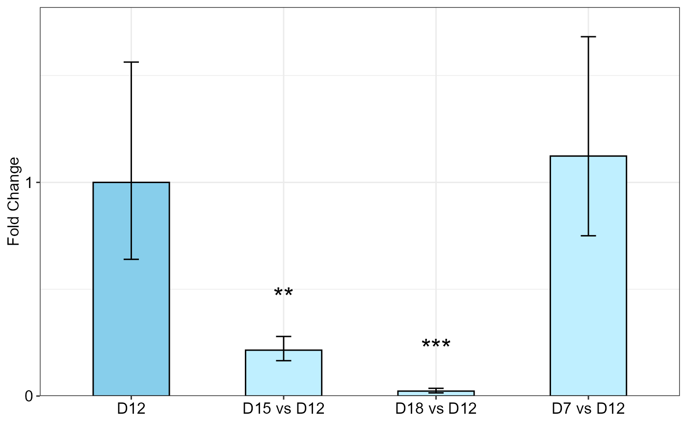
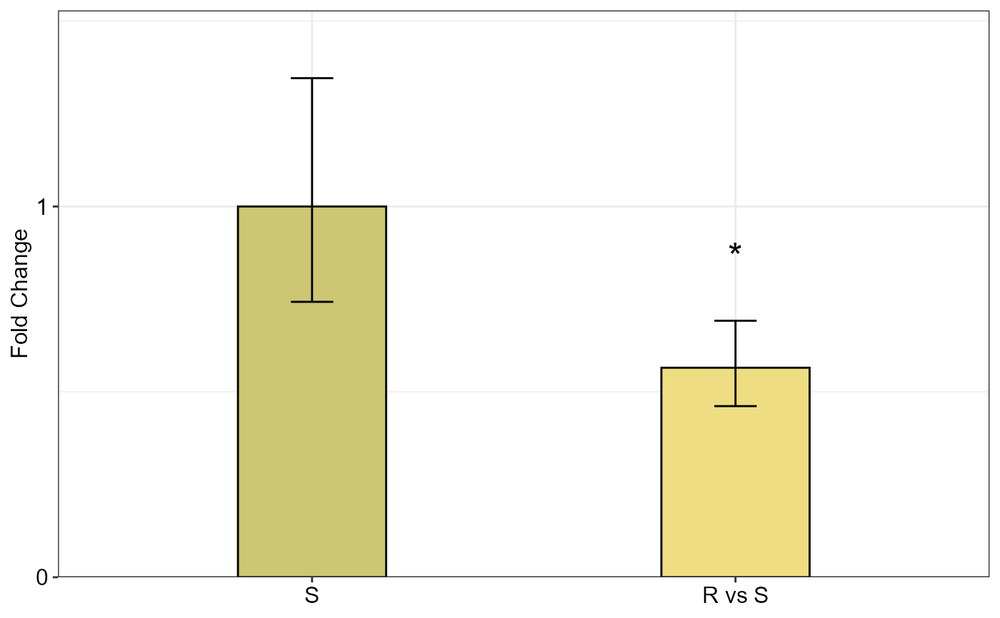

R/qpcrANOVAFC.r
qpcrANOVAFC.RdFold change (\(\Delta \Delta C_T\) method) analysis of qPCR data can be done using
ANOVA (analysis of variance) and ANCOVA (analysis of covariance) by the
qpcrANOVAFC function, for uni- or multi-factorial experiment data. The bar plot of the fold changes (FC)
values along with the standard error (se) and confidence interval (ci) is returned by
the qpcrANOVAFC function.
qpcrANOVAFC(
x,
numberOfrefGenes,
mainFactor.column,
analysisType = "anova",
mainFactor.level.order = NULL,
block,
width = 0.5,
fill = "#BFEFFF",
y.axis.adjust = 2,
y.axis.by = 1,
letter.position.adjust = 0.1,
ylab = "Fold Change",
xlab = "none",
fontsize = 12,
fontsizePvalue = 7,
axis.text.x.angle = 0,
axis.text.x.hjust = 0.5,
x.axis.labels.rename = "none",
p.adj = "none",
errorbar = "se",
plot = TRUE
)a data frame of condition(s), biological replicates, efficiency (E) and Ct values of
target and reference genes. Each Ct value in the data frame is the mean of technical replicates.
NOTE: Each line belongs to a separate individual reflecting a non-repeated measure experiment).
See vignette, section "data structure and column arrangement" for details.
number of reference genes which is 1 or 2 (up to two reference genes can be handled).
the factor for which fold change expression is calculated for its levels.
If ancova is selected as analysisType, the remaining factors (if any) are considered as covariate(s).
should be one of "ancova" or "anova". Default is "anova".
NULL (default) or a vector of main factor level names. If NULL,
the first level of the mainFactor.column is used
as calibrator. If a vector of main factor levels (in any order) is specified, the first level in the vector is
used as calibrator. Calibrator is the reference level or sample that all others are compared to. Examples are untreated
of time 0. The FC value of the reference or calibrator level is 1 because it is not changed compared to itself.
column name of the block if there is a blocking factor (for correct column arrangement see example data.). When a qPCR experiment is done in multiple qPCR plates, variation resulting from the plates may interfere with the actual amount of gene expression. One solution is to conduct each plate as a complete randomized block so that at least one replicate of each treatment and control is present on a plate. Block effect is usually considered as random and its interaction with any main effect is not considered.
a positive number determining bar width.
specify the fill color for the columns in the bar plot. If a vector of two colors is specified, the reference level is differentialy colored.
a negative or positive value for reducing or increasing the length of the y axis.
determines y axis step length
adjust the distance between the signs and the error bars.
the title of the y axis
the title of the x axis
font size of the plot
font size of the pvalue labels
angle of x axis text
horizontal justification of x axis text
a vector replacing the x axis labels in the bar plot
Method for adjusting p values
Type of error bar, can be se or ci.
if FALSE, prevents the plot.
A list with 7 elements:
Input data frame plus the weighted Delat Ct values (wDCt)
lm of factorial analysis-tyle
lm of ANCOVA analysis-type
ANOVA table
ANCOVA table
Table of FC values, significance and confidence interval and standard error with the lower and upper limits for the main factor levels.
Bar plot of the fold change values for the main factor levels.
Fold change (\(\Delta \Delta C_T\) method) analysis of qPCR data can be done using
ANOVA (analysis of variance) and ANCOVA (analysis of covariance) by the
qpcrANOVAFC function, for uni- or multi-factorial experiment data.
If there are more than one factor, FC value calculations for
the `mainFactor.column` and the statistical analysis is performed based on a full model factorial
experiment by default. However, if `ancova` is defined for the `analysisType` argument,
FC values are calculated for the levels of the `mainFactor.column` and the other factors are
used as covariate(s) in the analysis of variance, but we should consider ANCOVA table:
if the interaction between the main factor and covariate is significant, ANCOVA is not appropriate in this case.
ANCOVA is basically used when a factor is affected by uncontrolled quantitative covariate(s).
For example, suppose that wDCt of a target gene in a plant is affected by temperature. The gene may
also be affected by drought. Since we already know that temperature affects the target gene, we are
interested to know if the gene expression is also altered by the drought levels. We can design an
experiment to understand the gene behavior at both temperature and drought levels at the same time.
The drought is another factor (the covariate) that may affect the expression of our gene under the
levels of the first factor i.e. temperature. The data of such an experiment can be analyzed by ANCOVA
or using ANOVA based on a factorial experiment using qpcrANOVAFC. qpcrANOVAFC function performs FC
analysis even there is only one factor (without covariate or factor variable). Bar plot of fold changes
(FC) values along with the standard errors are also returned by the qpcrANOVAFC function.
Livak, Kenneth J, and Thomas D Schmittgen. 2001. Analysis of Relative Gene Expression Data Using Real-Time Quantitative PCR and the Double Delta CT Method. Methods 25 (4). doi:10.1006/meth.2001.1262.
Ganger, MT, Dietz GD, and Ewing SJ. 2017. A common base method for analysis of qPCR data and the application of simple blocking in qPCR experiments. BMC bioinformatics 18, 1-11.
Yuan, Joshua S, Ann Reed, Feng Chen, and Neal Stewart. 2006. Statistical Analysis of Real-Time PCR Data. BMC Bioinformatics 7 (85). doi:10.1186/1471-2105-7-85.
qpcrANOVAFC(data_1factor, numberOfrefGenes = 1, mainFactor.column = 1, block = NULL,
fill = c("#CDC673", "#EEDD82"), fontsizePvalue = 5, y.axis.adjust = 0.1)
#> Warning: The L1 level was used as calibrator.
#> ANOVA table
#> Type III Analysis of Variance Table with Satterthwaite's method
#> Sum Sq Mean Sq NumDF DenDF F value Pr(>F)
#> SA 4.9393 2.4696 2 4 14.319 0.01502 *
#> ---
#> Signif. codes: 0 '***' 0.001 '**' 0.01 '*' 0.05 '.' 0.1 ' ' 1
#>
#> ANCOVA table
#> Type III Analysis of Variance Table with Satterthwaite's method
#> Sum Sq Mean Sq NumDF DenDF F value Pr(>F)
#> SA 4.9393 2.4696 2 4 14.319 0.01502 *
#> ---
#> Signif. codes: 0 '***' 0.001 '**' 0.01 '*' 0.05 '.' 0.1 ' ' 1
#>
#> Fold Change table
#> contrast FC pvalue sig LCL UCL se Lower.se Upper.se
#> 1 L1 1.0000 1.0000 0.0000 0.0000 0.0208 0.9857 1.0145
#> 2 L2 vs L1 2.1987 0.0285 * 0.9514 5.0812 0.4388 1.6221 2.9803
#> 3 L3 vs L1 3.4661 0.0061 ** 1.4999 8.0101 0.0841 3.2698 3.6742
#>
#> Fold Change plot of the main factor levels
qpcrANOVAFC(data_2factor, numberOfrefGenes = 1, mainFactor.column = 2, block = NULL,
analysisType = "ancova", fontsizePvalue = 5, y.axis.adjust = 1)
#> Warning: The D0 level was used as calibrator.
#> ANOVA table
#> Type III Analysis of Variance Table with Satterthwaite's method
#> Sum Sq Mean Sq NumDF DenDF F value Pr(>F)
#> Drought 12.9530 6.4765 2 9.9998 41.691 1.408e-05 ***
#> Genotype 3.0505 3.0505 1 9.9998 19.637 0.001272 **
#> Drought:Genotype 4.5454 2.2727 2 9.9998 14.630 0.001072 **
#> ---
#> Signif. codes: 0 '***' 0.001 '**' 0.01 '*' 0.05 '.' 0.1 ' ' 1
#>
#> ANCOVA table
#> Type III Analysis of Variance Table with Satterthwaite's method
#> Sum Sq Mean Sq NumDF DenDF F value Pr(>F)
#> Genotype 3.0505 3.0505 1 14 6.649 0.0218703 *
#> Drought 12.9530 6.4765 2 14 14.117 0.0004398 ***
#> ---
#> Signif. codes: 0 '***' 0.001 '**' 0.01 '*' 0.05 '.' 0.1 ' ' 1
#>
#> Fold Change table
#> contrast FC pvalue sig LCL UCL se Lower.se Upper.se
#> 1 D0 1.0000 1.0000 0.0000 0.0000 0.3445 0.7876 1.2697
#> 2 D1 vs D0 1.0705 0.8051 0.5266 2.1763 0.2631 0.8920 1.2847
#> 3 D2 vs D0 3.5967 0.0003 *** 1.7693 7.3116 0.3576 2.8071 4.6084
#>
#> Fold Change plot of the main factor levels
# Data from Lee et al., 2020, Here, the data set contains technical
# replicates so we get mean of technical replicates first:
df <- meanTech(Lee_etal2020qPCR, groups = 1:3)
qpcrANOVAFC(df, numberOfrefGenes = 1, analysisType = "ancova", block = NULL,
mainFactor.column = 2, fill = c("skyblue", "#BFEFFF"), y.axis.adjust = 0.05)
#> Warning: The D12 level was used as calibrator.
#> ANOVA table
#> Type III Analysis of Variance Table with Satterthwaite's method
#> Sum Sq Mean Sq NumDF DenDF F value Pr(>F)
#> DS 184.275 61.425 3 24 31.2576 1.862e-08 ***
#> factor1 22.317 11.158 2 24 5.6783 0.00957 **
#> DS:factor1 25.186 4.198 6 24 2.1361 0.08615 .
#> ---
#> Signif. codes: 0 '***' 0.001 '**' 0.01 '*' 0.05 '.' 0.1 ' ' 1
#>
#> ANCOVA table
#> Type III Analysis of Variance Table with Satterthwaite's method
#> Sum Sq Mean Sq NumDF DenDF F value Pr(>F)
#> factor1 22.317 11.158 2 30 4.6269 0.01772 *
#> DS 184.275 61.425 3 30 25.4703 2.17e-08 ***
#> ---
#> Signif. codes: 0 '***' 0.001 '**' 0.01 '*' 0.05 '.' 0.1 ' ' 1
#>
#> Fold Change table
#> contrast FC pvalue sig LCL UCL se Lower.se Upper.se
#> 1 D12 1.0000 1.0000 0.0000 0.0000 0.6443 0.6398 1.5630
#> 2 D15 vs D12 0.2148 0.0050 ** 0.0541 0.8536 0.3767 0.1654 0.2789
#> 3 D18 vs D12 0.0231 0.0000 *** 0.0058 0.0919 0.6469 0.0148 0.0362
#> 4 D7 vs D12 1.1232 0.8204 0.2826 4.4636 0.5824 0.7501 1.6818
#>
#> Fold Change plot of the main factor levels

qpcrANOVAFC(data_2factorBlock, numberOfrefGenes = 1, mainFactor.column = 1,
mainFactor.level.order = c("S", "R"), block = "block",
fill = c("#CDC673", "#EEDD82"), analysisType = "ancova",
fontsizePvalue = 7, y.axis.adjust = 0.1, width = 0.35)
#> boundary (singular) fit: see help('isSingular')
#> ANOVA table
#> Type III Analysis of Variance Table with Satterthwaite's method
#> Sum Sq Mean Sq NumDF DenDF F value Pr(>F)
#> block 0.0035 0.0035 1 1 0.0228 0.904592
#> factor1 3.0505 3.0505 1 10 19.6368 0.001271 **
#> factor2 12.9530 6.4765 2 10 41.6916 1.408e-05 ***
#> factor1:factor2 4.5454 2.2727 2 10 14.6303 0.001072 **
#> ---
#> Signif. codes: 0 '***' 0.001 '**' 0.01 '*' 0.05 '.' 0.1 ' ' 1
#>
#> ANCOVA table
#> Type III Analysis of Variance Table with Satterthwaite's method
#> Sum Sq Mean Sq NumDF DenDF F value Pr(>F)
#> block 0.0072 0.0072 1 13 0.0146 0.9055452
#> factor2 12.9530 6.4765 2 13 13.1231 0.0007602 ***
#> factor1 3.0505 3.0505 1 13 6.1810 0.0272912 *
#> ---
#> Signif. codes: 0 '***' 0.001 '**' 0.01 '*' 0.05 '.' 0.1 ' ' 1
#>
#> Fold Change table
#> contrast FC pvalue sig LCL UCL se Lower.se Upper.se
#> 1 S 1.0000 1.0000 0.0000 0.0000 0.4288 0.7429 1.3461
#> 2 R vs S 0.5651 0.0273 * 0.3442 0.9279 0.2920 0.4616 0.6919
#>
#> Fold Change plot of the main factor levels

df <- meanTech(Lee_etal2020qPCR, groups = 1:3)
df2 <- df[df$factor1 == "DSWHi",][-1]
qpcrANOVAFC(df2, mainFactor.column = 1, fontsizePvalue = 5, y.axis.adjust = 2,
block = NULL, numberOfrefGenes = 1, analysisType = "anova")
#> Warning: The D12 level was used as calibrator.
#> ANOVA table
#> Type III Analysis of Variance Table with Satterthwaite's method
#> Sum Sq Mean Sq NumDF DenDF F value Pr(>F)
#> DS 63.493 21.164 3 6 25.216 0.0008438 ***
#> ---
#> Signif. codes: 0 '***' 0.001 '**' 0.01 '*' 0.05 '.' 0.1 ' ' 1
#>
#> ANCOVA table
#> Type III Analysis of Variance Table with Satterthwaite's method
#> Sum Sq Mean Sq NumDF DenDF F value Pr(>F)
#> DS 63.493 21.164 3 6 25.216 0.0008438 ***
#> ---
#> Signif. codes: 0 '***' 0.001 '**' 0.01 '*' 0.05 '.' 0.1 ' ' 1
#>
#> Fold Change table
#> contrast FC pvalue sig LCL UCL se Lower.se Upper.se
#> 1 D12 1.0000 1.0000 0.0000 0.0000 0.6704 0.6283 1.5915
#> 2 D15 vs D12 0.3139 0.0668 . 0.0522 1.8893 0.0888 0.2952 0.3338
#> 3 D18 vs D12 0.0403 0.0008 *** 0.0067 0.2425 0.8773 0.0219 0.0740
#> 4 D7 vs D12 2.9851 0.0795 . 0.4960 17.9669 0.8740 1.6288 5.4709
#>
#> Fold Change plot of the main factor levels
addline_format <- function(x,...){gsub('\\s','\n',x)}
qpcrANOVAFC(data_1factor, numberOfrefGenes = 1, mainFactor.column = 1,
block = NULL, fill = c("skyblue","#79CDCD"), y.axis.by = 1,
letter.position.adjust = 0, y.axis.adjust = 1, ylab = "Fold Change",
fontsize = 12, x.axis.labels.rename = addline_format(c("Control",
"Treatment_1 vs Control",
"Treatment_2 vs Control")))
#> Warning: The L1 level was used as calibrator.
#> ANOVA table
#> Type III Analysis of Variance Table with Satterthwaite's method
#> Sum Sq Mean Sq NumDF DenDF F value Pr(>F)
#> SA 4.9393 2.4696 2 4 14.319 0.01502 *
#> ---
#> Signif. codes: 0 '***' 0.001 '**' 0.01 '*' 0.05 '.' 0.1 ' ' 1
#>
#> ANCOVA table
#> Type III Analysis of Variance Table with Satterthwaite's method
#> Sum Sq Mean Sq NumDF DenDF F value Pr(>F)
#> SA 4.9393 2.4696 2 4 14.319 0.01502 *
#> ---
#> Signif. codes: 0 '***' 0.001 '**' 0.01 '*' 0.05 '.' 0.1 ' ' 1
#>
#> Fold Change table
#> contrast FC pvalue sig LCL UCL se Lower.se
#> 1 Control 1.0000 1.0000 0.0000 0.0000 0.0208 0.9857
#> 2 Treatment_1\nvs\nControl 2.1987 0.0285 * 0.9514 5.0812 0.4388 1.6221
#> 3 Treatment_2\nvs\nControl 3.4661 0.0061 ** 1.4999 8.0101 0.0841 3.2698
#> Upper.se
#> 1 1.0145
#> 2 2.9803
#> 3 3.6742
#>
#> Fold Change plot of the main factor levels